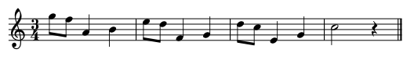

COMP 4441 Computer Music
Lab 4: Wavetable Synthesis and Score Input
What to do?
In this lab, you will synthesize instrument tones using
wavetable synthesis and input a simple score.
Synthesize tones using wavetable synthesis
- You may start your lab on sinewave.orc and
sinewave.sco.
- You are required to synthesize a organ tone.
- Use PVan+ to get the amplitudes of the first 10 harmonics when the
peak RMS amplitude is reached (The "Peak RMS Amp" option is chosen).
- Construct a wavetable in the score file.
- You may test the synthesized notes by inputting some notes in the score
files.
Pitch-class and cpspch
- Looking up the frequency of each note is a tedious work. Pitch-class and
cpspch can be
used to due with this issue.
- Function cpspch
takes a pitch-class value and return a corresponding frequency in Hertz.
- A pitch-class consist of a decimal number in a format of yy.xx.
- yy represent the octave number of a note (8 represent the octave of C4).
- xx is a number from 0 to 11 represent the note order in a octave
starting with C (e.g. C4 => 8.00, C#4 => 8.01, D4 => 8.02 .... B4 => 8.11).
- You can look up the pitch-class of each note from this
table.
- Modify the orc file such that we can input p5 as a pitch-class value
instead of frequency in Hertz.
- The final orc file should look like this.
Simple Score Input
- When you need to input a note in this assignment, you have to figure out
7 parameters (p1 to p7).
- For p1(i1), p4(amp, is given), p6(attack, is given) and p7(decay, is
given), you should have no problems to figure out.
- For p2(start) and p3(duration), please refer to P.14 of lecture note
Rhythm to
figure out the way to deduce from a score.
- For p5(pitch), please refer to lecture note
Pitch to figure
out the way to deduce the pitch of a note from a score. Then look up the
pitch class from the pitch-class
table.
Lab Assignment
-
Synthesize the organ tone using the skills learned
in lab2.
-
Add cpspch function such that we can input pitch-class in p5
instead of frequency in Hertz.
- Input the following score with organ. (It is okay if you did the previous version, which was harder.)

- Set the tempo to 145 beat per minute. Refer to lecture notes Amplitude slides 22-26 about the tempo statement.
-
The final score should sound like this. This is a selection from the piece "Gran Vals", which you can watch a full peformance here: Gran Vals - Francisco Tárrega. Enjoy!
-
Re-name the final files as song.orc and song.sco.
CASS - Course Assignment Submission
System
If you have finished your assignment
and demonstrated to your TAs, you don't need to submit your files to
CASS. But if you don't attend the labs or you
cannot finish the assignment in the lab, you need to submit the source
code using the
CASS.
Demonstration and Submission
Please submit your files using
CASS by Monday (27-Oct-2014). For any questions, please contact
your TAs by email (*Only for question asking. Submissions please go to CASS.* ronmo@cse.ust.hk, bwuaa@cse.ust.hk).
DO NOT submit the wav file; submitting the orc and sco
files will be enough. Thank you.